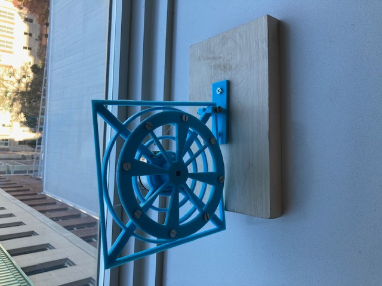

The Middle
The initial phase of the design process revolved around creating the reaction wheels.
My primary objective was to optimize their performance by striking a balance between
minimizing weight at the center while increasing weight at the edges to achieve enhanced
torque. To achieve this, I strategically removed material from the center of the wheels
and incorporated holes along the edges, where I would later attach screws and nuts. For
the outer walls of the cube, I kept the design straightforward, ensuring that visibility
into the cube was unobstructed. Additionally, I designed a simple yet effective hinge
mechanism to facilitate preliminary testing. With the design taking shape, the next step
involved acquiring the essential components required for the project. I meticulously
selected high-quality motors, a reliable MPU 1060 (combining accelerometer and gyroscope
capabilities), a suitable battery, and a capable microcontroller. Having assembled all
the necessary components, the stage was set for the crucial testing phase, where the true
potential of the Cubli-inspired creation would be unveiled.
